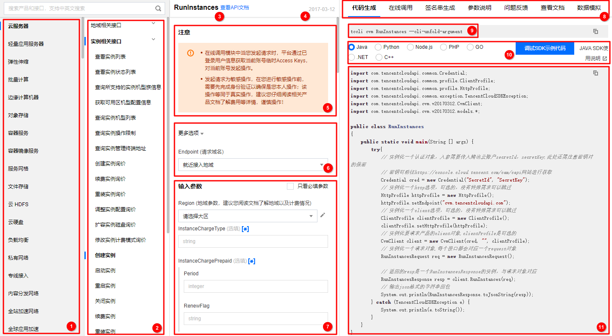

Resources
API实践
想要了解各API的用法，可先在腾讯云官方文档寻找：云函数 API 概览-API 中心-腾讯云 (tencent.com)
腾讯云官方推荐API Explorer调试API和生成代码，它提供了在线调用、签名验证、SDK 代码生成和快速检索接口等能力：

总结使用API步骤：
- 在文档中找到想要的API，了解API的功能和用法；
- 在API Explorer中下载代码或调试；
- 安装代码所需要的对应依赖，并将参数（如秘钥等）替换成自己腾讯云账号的，密钥可前往官网控制台进行获取；
- 为了项目的可维护性，参数可设置成环境变量或配置文件，并根据实际项目需要修改代码。
重要API整理
公共参数
云函数 公共参数-调用方式-API 中心-腾讯云 (tencent.com)
使用Postman或者Curl直接发送请求时需要带上这些公共参数，下面是使用Curl发送请求的一个示例（由API Explorer生成）：
|
|
而使用各种语言的SDK调用这些API则不需要管这些公共参数，仅需配置秘钥即可。
下面是一些重要的API，腾讯云官方的API文档已经很详细易用，了解更具体的用法可查看它。
函数相关API
获取函数列表
https://cloud.tencent.com/document/api/583/18582
创建函数
函数需要打包成.zip文件并采用BASE64编码转换成字符串在code的zipFile参数中，或先上传到腾讯云CosBucket对象存储桶中。
https://cloud.tencent.com/document/api/583/18586
删除函数
需要函数名。
https://cloud.tencent.com/document/api/583/18585
运行函数
需要函数名。
https://cloud.tencent.com/document/api/583/17243
获取函数详细信息
需要函数名。
https://cloud.tencent.com/document/api/583/18584
触发器相关API
设置函数触发方式
即创建触发器，需要触发器的名称、类型（ cos 、cmq、 timer 定时触发器、 ckafka、apigw API网关）、名字、[描述](云函数 触发器配置描述-触发器-文档中心-腾讯云 (tencent.com))。触发器描述中指定触发器的配置。
https://cloud.tencent.com/document/api/583/18589
删除触发器
需要函数名、触发器名称、类型。
https://cloud.tencent.com/document/api/583/18588
更新触发器状态
开关触发器，需要函数名、触发器类型、触发器名、开或关。apigw类触发器无法开关。
https://cloud.tencent.com/document/api/583/89800
获取函数触发器列表
需要函数名。